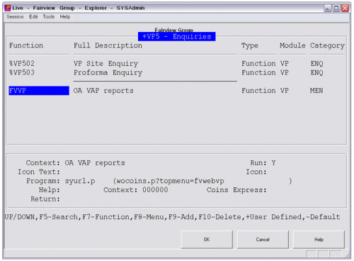

Assigning a OA Function to a Standard COINSplus Menu
Once a report or has been created in OA it is then possible to grant users access to this function from their standard menus. To do this, simply create a new function in and associate this function with the program syurl.p.
When adding a new function to a menu, it is strongly advised that the menu is made User Defined by using the + functionality.

The procedure syurl.p then needs to be passed the OA standard function (wocoins.p) and also the OA menu function which is to be run.
Users can then be granted access to this function in the normal manner, when the function is run will pass user information (login details, security configurations etc.) to .